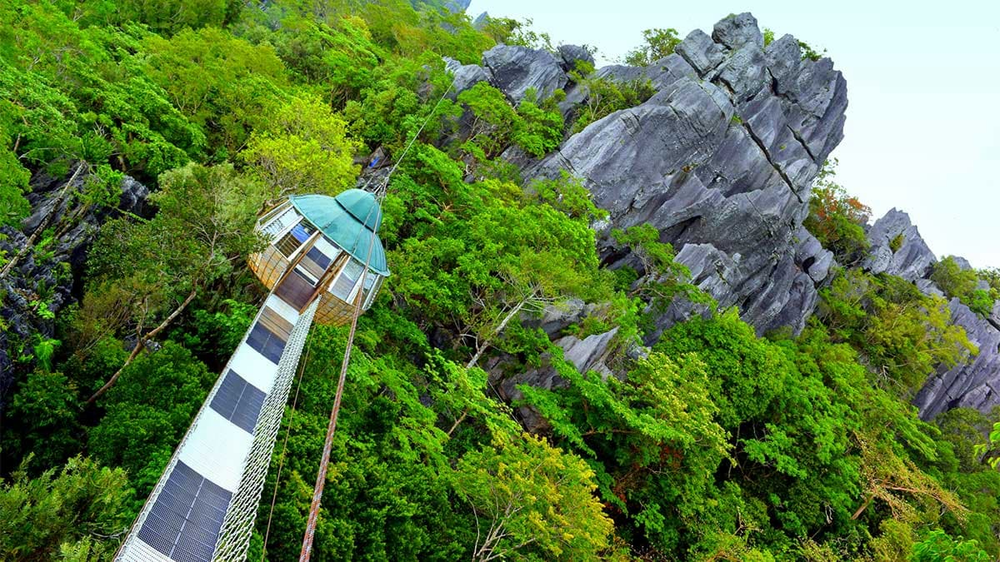
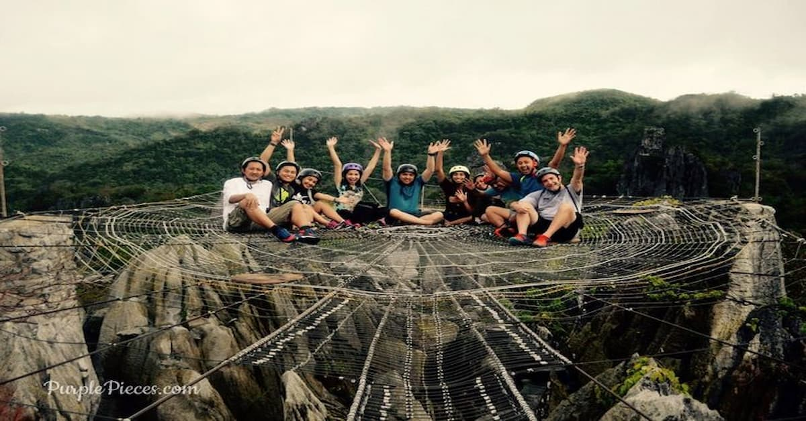
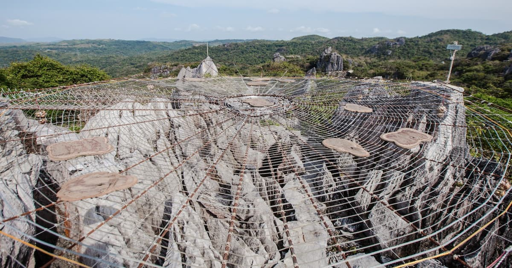

Best for: Adventure Seekers, Eco-Warriors, and Nature Photographers.
Vibe: Wild, High-Adrenaline, and Pristine.


Masungi Georeserve
Adventure and Conservation Amidst 60-Million-Year-Old Limestone.
Masungi Georeserve is a world-class conservation project that offers an adventure unlike any other in Southeast Asia. Tucked away in the rainforests of Baras, it is famous for its rugged karst landscapes and the innovative "Discovery Trail."


